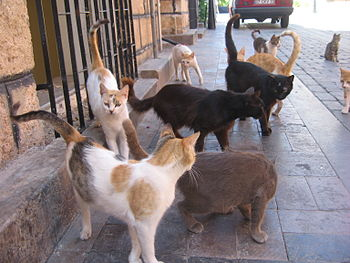

Плюсы:
+ Кошки отлично снимают стресс, избавляют от бессонницы и раздражительности. Также у владельцев кошек снижается вероятность возникновения астмы (кроме тех, у кого аллергия на кошачью шерсть) и уменьшается риск умереть от сердечного приступа.
+ Кошки не требуют от вас так много времени, как, например, собаки. Они достаточно независимы и смогут без ущерба для собственной психики находится дома в одиночестве, пока вы на работе.
+ Кошек не надо выгуливать по нескольку раз в день. Достаточно просто иметь лоток с наполнителем в квартире.
+ Кошки чистоплотны. Треть всего времени бодрствования кошки занимаются собой — вылизывают шкурку и умываются.
+ Кошки обладают столь чувствительным носом, что могут почувствовать в воздухе газ, даже если вы его не чувствуете. Таким образом, эти животные могут предупредить хозяев об утечке газа в доме. Кроме того, согласно наблюдениям ученых, кошки способны предсказывать землетрясения, наводнения и даже погоду.
Минусы:
— Кошки привыкают к дому и не любят путешествовать. Поэтому возить за собой кошку, переезжая с места на место — это значит причинять стресс животному и доставлять неудобства себе.
— Считается, что кошек сложно выдрессировать. Сначала вам придется приучить котенка к туалету, затем научить точить когти в специальном месте (когтеточке). Также придется иметь дело с тем, что коты (некастрированные) имеют привычку метить территорию. А в период «кошачьей весны» вам придется искать способы, как справляться с кошачьими воплями.
— Ночной образ жизни. Часто кошки, как заложено в них природой, спят днем, зато ночью у них начинается период активности. Они могут ловить невидимых мышей, прыгать по диванам и шкафам, будить хозяев.
— У кошек очень острые когти, царапины от которых могут долго не проходить. Поэтому играться с пушистыми созданиями нужно аккуратно. Особенно это касается маленьких детей.
— Характер у этого животного весьма независимый, поэтому придется мириться с тем, что ваш питомец не отзывается на кличку, не спит в выделенном для него месте и не подстраивается под хозяев.
